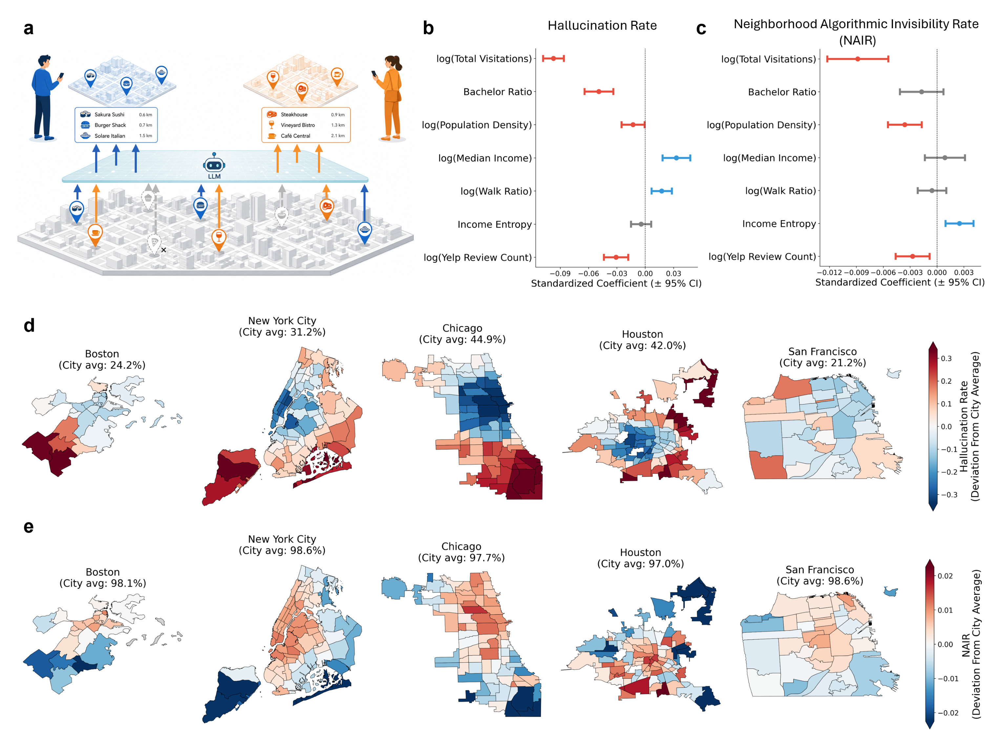
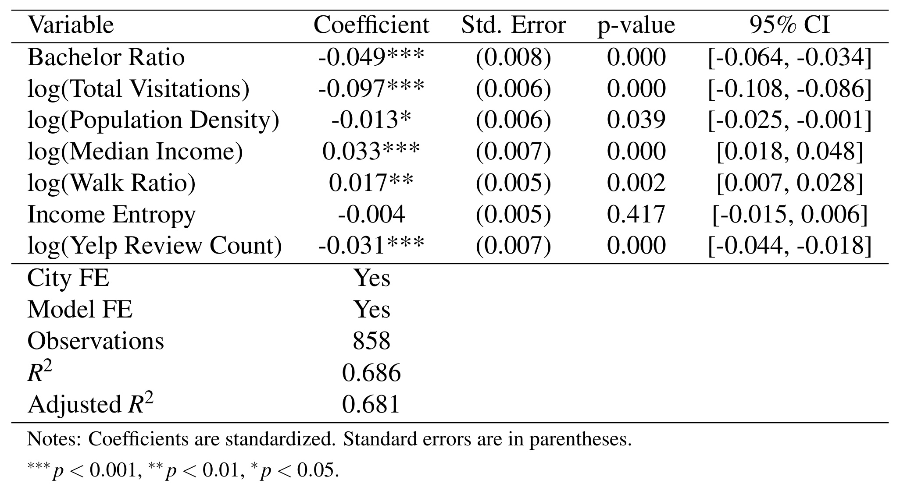
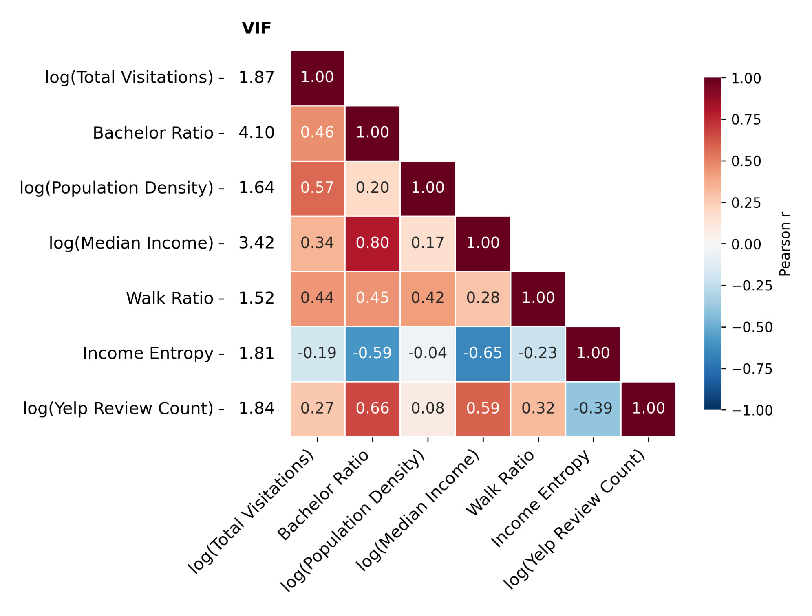
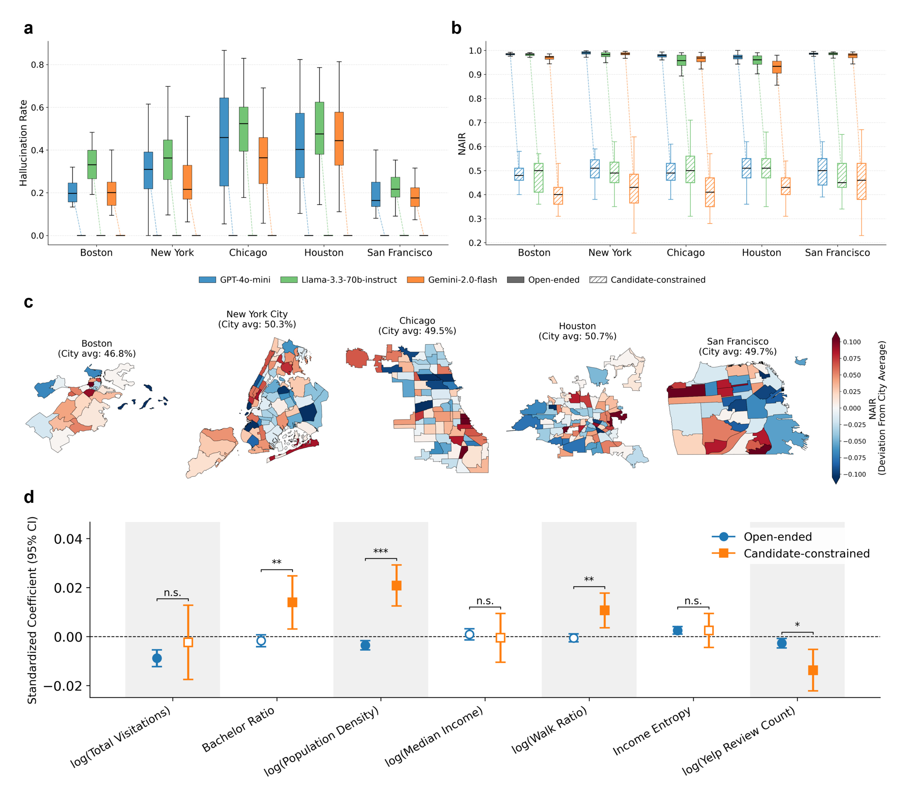
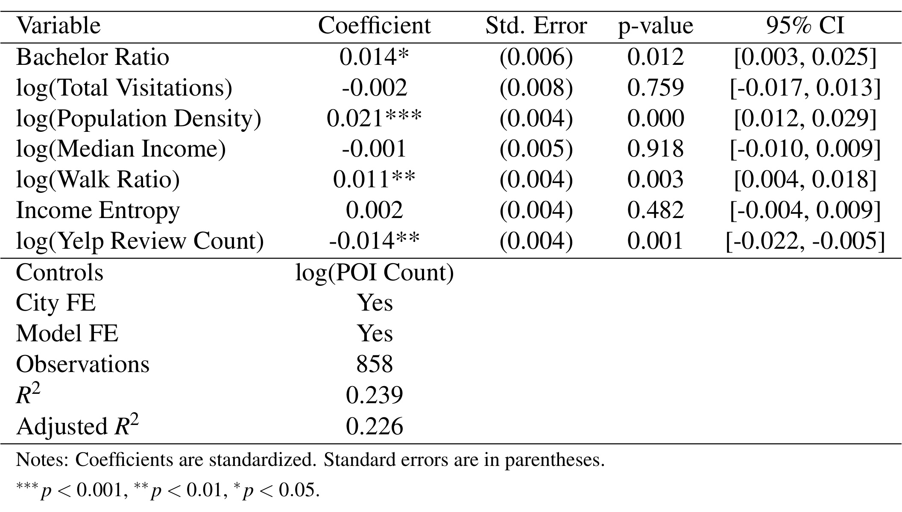
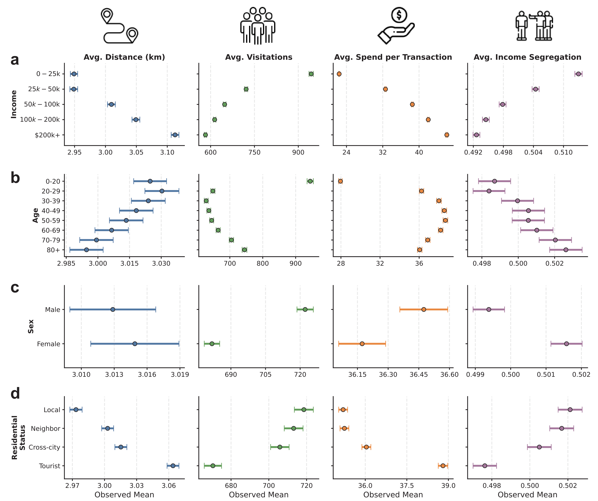
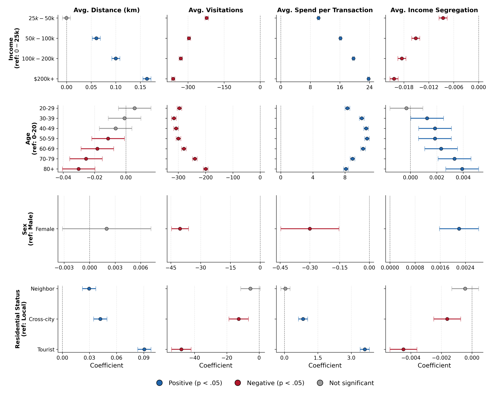
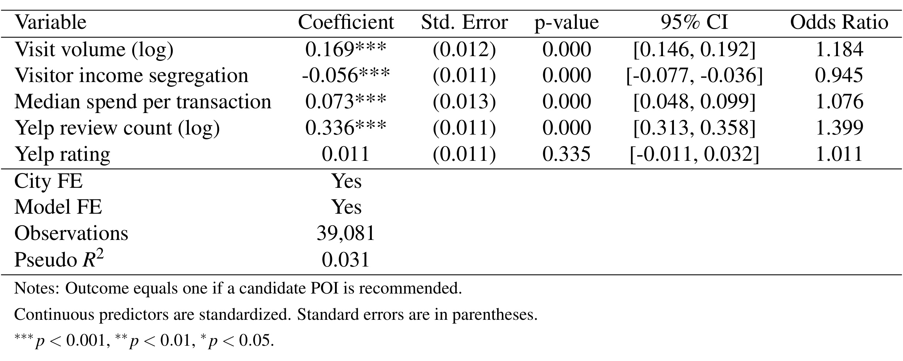
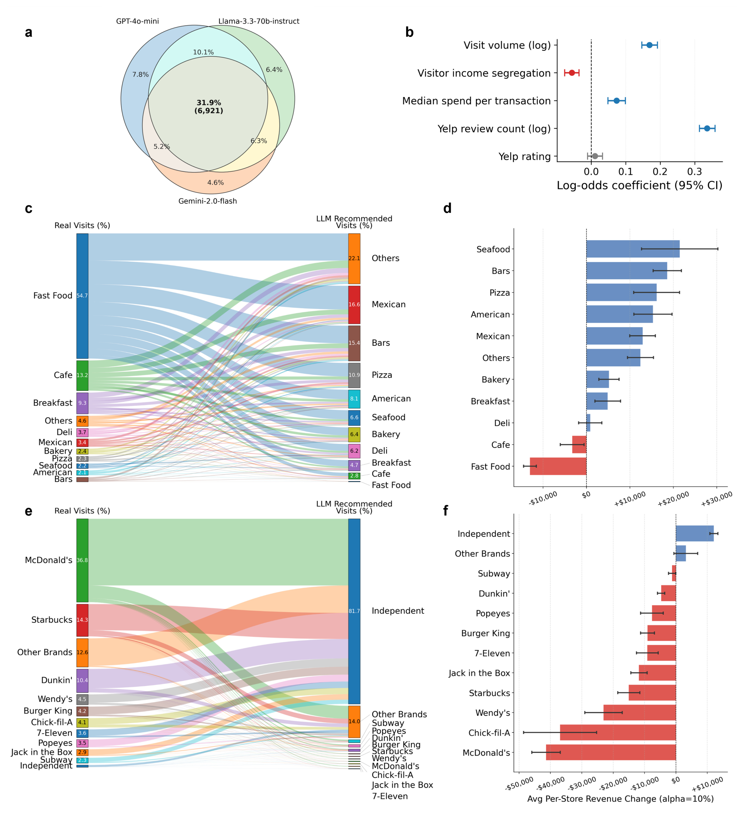

Large language models create an uneven informational layer over cities / 大语言模型在城市之上形成不均匀的信息层
本文由 Northeastern University 的 Lin Chen、Guangyuan Weng 和 Esteban Moro 完成，一作主机构为 Network Science Institute，Guangyuan Weng 同时隶属 Khoury College of Computer Sciences。论文于 2026 年 7 月 7 日公开在 arXiv:2607.06260，主类别按推荐算法处理：它审计的不是模型知识问答本身，而是 LLM 如何生成餐厅候选集合、分配场所曝光并根据用户画像做隐式个性化。PDF 第 8 页声明复现实验代码位于 SUNLab-NetSI/llm-urban-info-layer；但该精确地址在 2026 年 7 月 14 日核验时返回 HTTP 404，组织页可访问，因此当前不能把代码写成“已公开可复现”。
LLM 正在更早地介入城市选择：它不只是给已知地点排序，而是直接决定哪些地点进入用户的考虑集合；生成回答又不会展示被排除选项的边界。关键问题是，一个场所没有出现，究竟因为模型不知道它，还是因为即使得到完整、真实的候选列表，模型仍持续选择性地忽略它。
1. 背景和问题
1.1 从“给候选排序”前移到“创造选择集”
传统本地搜索、点评平台和推荐系统通常把可检索对象放在一个可见列表中：排序靠后的商家曝光更少，但用户继续翻页或滚动仍有机会发现它。LLM 餐厅推荐改变了这个界面。用户说出社区、预算、身份或场景，模型通常只生成十来个名字，回答既没有完整候选池，也不提示哪些真实场所被遗漏。于是模型的作用从“在选择集中分配名次”前移到“决定选择集本身”。这一步比普通重排更强，因为未生成的商家并不是低排名，而是完全不进入后续比较。
论文把这种作用称为覆盖在物理城市之上的信息层。城市本来就在收入、教育、商业密度、公共交通和服务可得性上存在空间差异；如果 LLM 赋予场所的可见性也随社区社会经济特征变化，那么它可能把既有不平等翻译成新的表示不平等。与 CTR 或点击率审计相比，这里的核心对象不是“用户是否点击一个已曝光 item”，而是“真实 item 是否获得过进入回答的机会”。这正是它归入推荐算法主类别的原因：研究对象是候选生成、曝光分配、画像条件化和选择集覆盖。
论文选餐厅还有一个现实理由。餐饮是高频、跨收入层的城市决策，可与访问、消费、点评和人口统计数据连接；一个推荐名字可能对应一次真实访问和一笔交易。不过，这种可连接性并不自动赋予因果解释。论文能直接观察的是模型输出和数据集中已有访问/消费特征，能估计的是条件相关，能模拟的是“假设一部分需求改按 LLM 推荐分布行动”时的静态重分配。三者必须分开。
1.2 双重失效：不存在的场所与存在但不可见的场所
作者把失败拆成两层。第一层是 grounding failure：模型生成一个无法与本地真实场所匹配的名字，即“虚假的存在”。论文用 hallucination rate 表示某社区内无法匹配的唯一生成场所名占全部唯一生成场所名的比例。第二层是 coverage deficit：一个真实场所存在于参考集合，却在所有画像查询中一次都没有获得推荐，即“真实的缺席”。论文用 Neighborhood Algorithmic Invisibility Rate（NAIR）表示这种从未被推荐场所占参考集合的比例。
NAIR 必须连同分母读。自由生成条件下，参考集合是社区中心 5 km 内全部 food-related POI；候选约束条件下，参考集合是固定随机种子抽出的 100 个真实候选。前者分母可能很大，而每次回答只给 10 个名字，96.8% 的高 NAIR 同时受到有限输出预算和场所池规模影响；后者把分母固定后，仍有 47.5% 候选跨 320 个画像从未出现，才更直接暴露稳定的选择性注意。两种 NAIR 可以比较干预方向，但不能把绝对差全部解释为“模型偏见减少了 51%”，因为候选集合和匹配机制也改变了。
1.3 认识论失效与分配失效需要不同修复
论文把两种解释写成竞争假设。若遗漏来自不完整的本地知识，给模型提供经核验的真实场所列表应该同时修复幻觉和覆盖，这属于 epistemic failure。若幻觉消失而某些真实场所仍稳定不被选择，问题就不只在知识库，而在模型对“哪些候选值得说”的分配逻辑，属于 allocative failure。前者可优先通过检索、结构化目录和实体解析处理；后者需要覆盖约束、多样性目标、曝光审计或显式的候选探索机制。
研究还追问两个扩展问题。其一，三种模型是否共同忽略同一批场所；如果共同盲区远大于模型特有盲区，解释就更可能指向共享数字生态或训练材料，而非某个模型的偶发错误。其二，相同候选池面对不同收入、年龄、性别和居住身份时，输出是否系统变化；这对应隐式个性化的公平边界。LLM 没有用户行为历史，却能从自然语言人口属性推断“你大概会去哪里”，其风险不是传统 collaborative filtering 的历史偏差复刻，而是模型根据身份描述预先构造生活方式。
这套问题设定的价值在于把“答案对不对”扩成“真实世界被看见多少、谁看见什么”。但论文证据仍有层级：候选约束给出了强对照；社区回归和场所回归给出相关性；共同盲区指向共享机制但没有定位训练语料；收入重分配则完全依赖反事实假设。后文所有结论都按这四层证据强度解读。
2. 方法
2.1 审计单元：五座城市、304 个社区与 320 类合成画像
作者选择 Boston、New York、Chicago、Houston 和 San Francisco，使用 city-defined neighborhood boundary，并用各城市官网名称补充。五城分别包含 26、71、77、88 和 42 个 neighborhood，总计 304 个社区。每个查询围绕社区 centroid 的 5 km 半径产生餐厅推荐。三种模型来自不同家族：GPT-4o-mini、Llama-3.3-70b-instruct 和 Gemini-2.0-flash，均通过 OpenRouter 调用，温度设为 0，以降低同一 prompt 的随机波动。

Figure 1 解读。 a 把 LLM 画成连接物理城市与用户考虑集合的中间层，蓝色与橙色路径说明不同用户可能从同一城市得到不同可见子集。b、c 用标准化系数和 95% 置信区间分别描述 hallucination rate 与 NAIR 的社区相关因素：总访问量和 Yelp 评论数在两者中都呈负相关，但 Bachelor Ratio、Walk Ratio 与 Income Entropy 的显著性并不一致，说明两个指标不是同一误差的重复命名。d、e 显示 GPT-4o-mini 相对各城市均值的社区偏离；地图的红蓝是“相对本城平均”，不能跨城市直接当作绝对高低。图中开放条件下各城 NAIR 均接近极高水平，也提醒读者有限回答长度是覆盖率的重要机械约束。
每个合成画像由四个维度全因子组合：家庭收入 5 档、年龄 8 档、性别 2 类、居住身份 4 类。作者没有按 ACS 中的真实联合概率抽样，而是让所有水平等量交叉，使每项属性都能在其他属性的完整组合上被观察；因此每个社区的画像数由下面的乘积确定：
符号解释： 四个乘数分别对应收入、年龄、性别和 residential status 的水平数；320 是每个 neighborhood 的画像组合数，不是 320 名真实用户。四档居住身份从本地居民、邻近地区居民、城市其他地区居民到游客，并被写成与目标社区相对关系的自然语言。
平衡全因子设计让每一属性水平都与其他属性的全部组合共同出现，减少从真实人口联合分布抽样时的共线性。这有利于估计画像属性的边际输出差异，却牺牲了生态真实性：现实中年龄、收入、居住身份和社区并非独立均匀组合，某些画像可能极少出现。论文因此审计的是“模型在受控身份提示下如何筛选”，不是城市真实用户人群的无偏抽样。场所和社区特征来自多套数据：SafeGraph/Foursquare 提供 POI 与消费信息，Spectus 匿名移动数据提供访问，Yelp 提供 review count 与 rating，ACS 2022 五年估计提供社区人口统计。访问量按 census block group 的“人口/面板用户数”加权做 post-stratification。多个关键数据受许可限制，代码当前也不可访问，复现不仅需要 prompt，还需要实体目录、移动面板、交易口径和空间连接规则。
2.2 双实验：自由生成与 candidate-constrained 选择
自由生成 prompt 只给城市、社区名、经纬度中心、5 km 半径和合成画像，要求返回恰好 10 个餐厅名，不提供真实场所列表。这一设置贴近用户直接问 LLM 的体验，但把三类因素混在一起：模型是否知道场所、能否正确生成名字、以及知道后是否愿意选择它。它适合测现实接口的总体失效，却不能单独定位遗漏原因。
候选约束实验先检索 5 km 内全部 food-related POI，再用固定随机种子 42 无放回抽取 100 个真实场所，以 “Name (Address)” 格式交给模型，要求只从其中选择恰好 10 个。地址用于区分同名商家。因为同一 neighborhood 内所有 320 个画像面对同一个候选池，画像间输出差异不能再归因于“某画像看到了不同库存”；它主要反映模型在同一信息环境中的条件化筛选。这个对照的关键不是候选约束让模型更“聪明”，而是把候选可得性固定：若幻觉归零而不可见性仍高，verified data 只修复了实体 grounding，没有自动修复曝光分配。 同时也要看到实验边界：100 选 10 的强格式约束与真实 RAG 产品不同，temperature 0 只得到每个 prompt 一次确定性响应，模型 API 版本和系统提示变化可能改变结果。
2.3 地理—语义匹配与 hallucination、NAIR
自由生成场所名先做小写化、标点和撇号移除、连接词标准化。对每个生成名字，作者计算 GTE 名称向量余弦相似度和场所到社区中心的 Haversine 距离衰减。语义信号用于判断名字是否指向同一实体，地理信号用于排除同名却远离目标社区的门店；只有二者同时通过阈值，真实场所才进入候选集合：
符号解释： \(e_i^q\) 是第 \(i\) 个生成名字的归一化 embedding，\(e_j^p\) 是真实场所 \(j\) 的名称 embedding，\(d_{ij}\) 是场所到 neighborhood centroid 的公里距离；\(\theta_s=0.9\)、\(\theta_d=0.135\)，\(\tau=5\) km。两个门槛必须同时满足；若 \(C_i\) 为空，该名字记为 unmatched hallucination。距离是相对 centroid 而非“生成场所坐标”，因为模型只返回名字，这会使横跨社区边界的连锁店和同名场所更依赖名称判别。
多个真实候选同时过阈值时，算法还需要从相似连锁店、别名和邻近分店中选出唯一映射。论文没有按名称相似度单独取最大值，而是把语义与地理分数加权，使语义主导、距离负责消歧；最终匹配写为：
符号解释： \(j^*(i)\) 是生成名字 \(i\) 的最终实体，\(\lambda=0.7\)，所以名称语义权重为 70%，地理接近权重为 30%。这套匹配不是人工真值：阈值过严会把拼写变体误记成 hallucination，过松会把相似连锁店错误合并。候选约束条件更简单，先 exact string match，再用 normalized Levenshtein similarity 不低于 85 处理轻微格式差异。
Hallucination rate 的分子是 unmatched 的唯一生成名字数；NAIR 的分子是跨全部画像零推荐的参考场所数。前者关心生成事实，后者关心集合覆盖。一个模型可能 hallucination 很低却反复推荐少数头部店，因而 NAIR 很高；也可能推荐较多真实长尾场所却偶尔编造名字。论文后续回归分别建模二者，避免用单一“准确率”掩盖曝光集中。
2.4 回归审计、社会混合指标与需求重分配
社区层 pooled regression 分别以 hallucination rate、开放 NAIR 和候选约束 NAIR 为因变量，连续协变量标准化，并控制 city 与 LLM-model fixed effects；NAIR 模型还控制 POI count。协变量包括 Bachelor Ratio、总访问量、人口密度、median income、walk ratio、income entropy 和 Yelp review count。系数比较的是在其他变量和固定效应给定时的一标准差关联，不能写成“提高 Yelp 评论会因果降低 NAIR”。人口属性部分另外审计四个 outcome：推荐场所距社区中心的平均距离、真实平均访问量、每笔 median spend，以及访客收入隔离度。Figure 3 报告各画像层的 observed mean 与 95% CI；Figure S8 报告作者称为 mixed-effects regression 的系数，并控制 city 和 model fixed effects。论文正文与图注没有完整写出随机效应结构，因此这里只解释 reference group、系数方向、标准误和显著性，不自行构造 random intercept。
场所访客收入隔离度用于把“推荐了什么价位”与“推荐地点会让用户接触怎样的社会构成”分开。作者先按城市人口加权断点把 home CBG 分成四个收入四分位，再统计每个场所至少 20 名唯一访客的 dwell-time share；随后以四组相对均匀分布的绝对偏离定义：
符号解释： \(\tau_q\) 是收入四分位 \(q\) 的访客在该场所贡献的停留时间占比，只有至少 20 名唯一访客的场所进入计算；四组各占四分之一时 \(S=0\)，全部停留时间来自一个收入组时 \(S=1\)。它衡量场所访客构成的收入同质性，不是社区收入差距，也不是对个体身份的推断准确率。
经济投影不直接拿推荐次数减真实访问数，因为两者量纲和总量不同。作者先在每个 neighborhood 内分别归一化真实访问和 LLM 推荐频次，把它们变成总和为 1 的 observed distribution 与 recommendation distribution，再比较同一场所在两个分布中的份额：
符号解释： \(n_i\) 是 post-stratified 真实访问数，\(r_i\) 是场所 \(i\) 跨画像获得推荐的次数；两个 share 都在同一 neighborhood 内求和为 1。这里默认推荐频次可代表用户按 LLM 行动后的相对需求，这是一项强行为假设。
归一化之后，作者假设只有比例为 \(\alpha\) 的用餐决策从观察分布切换到推荐分布，其余 \(1-\alpha\) 仍维持原分布；这样每个 neighborhood 的总 visits 固定，只重新分配场所份额。再用场所交易价格把访问变化换算为收入，得到：
符号解释： \(\alpha\) 是从观察分布切换到 LLM 推荐分布的消费比例，基准取 0.10；\(\tilde p_i\) 是 SafeGraph 的场所 median spend per transaction。构造上每个 neighborhood 的 \(\sum_i \Delta \mathrm{visits}_i=0\)，总访问只重分配不增长；收入总和不必为零，因为场所价格不同。因此后文的“增加或减少多少美元”是静态反事实投影，不是观测收入、随机实验处理效应，也没有考虑价格、容量、竞争和反馈回路。
3. 实验结果
3.1 自由生成：36.8% hallucination 与 96.8% NAIR
三模型、五城汇总的自由生成 hallucination rate 为 36.8%，95% CI 为 [35.6%, 38.0%]。空间上，纽约 Manhattan 较低、部分外围社区较高；Boston、Chicago、Houston 和 San Francisco 各有不同梯度。社区回归中，总访问量 \(\beta=-0.097\)、Yelp 评论数 \(\beta=-0.031\)、Bachelor Ratio \(\beta=-0.049\)、人口密度 \(\beta=-0.013\) 与 hallucination 负相关；median income \(\beta=0.033\) 和 walk ratio \(\beta=0.017\) 为正相关。这里的 \(\beta\) 是标准化条件相关，不支持“富裕或步行社区导致模型幻觉”的因果叙述；作者对 niche/local establishments 的解释只是可能机制。

Table S1 解读。 表中 858 个 observation 对应 neighborhood-model 组合，city/model fixed effects 均加入，\(R^2=0.686\)。总访问量的负系数绝对值最大，95% CI [-0.108,-0.086] 不跨零；Yelp 评论、Bachelor Ratio、人口密度也显著为负。median income 与 walk ratio 显著为正，而 income entropy 的区间 [-0.015,0.006] 跨零。表格的价值在于把 Figure 1b 的点图补成完整不确定性，但较高 \(R^2\) 仍不等于协变量识别了生成错误的原因；数据覆盖、城市商业形态和模型共同先验都可能同时作用。
开放条件 NAIR 平均 96.8%，95% CI [96.6%,97.0%]。总访问量 \(\beta=-0.009\)、人口密度 \(\beta=-0.004\)、Yelp 评论数 \(\beta=-0.003\) 与 NAIR 负相关，income entropy \(\beta=0.003\) 为正；Bachelor Ratio、median income、walk ratio 不显著。因而“事实可靠”和“覆盖更广”并不同步：Bachelor Ratio 和 walk ratio 对 hallucination 显著，却对 NAIR 不显著；income entropy 则相反。
Table S2 解读。 这张表同样有 858 个 observation，并额外控制 log(POI Count)，\(R^2=0.659\)。总访问、人口密度和 Yelp 评论的 95% CI 全在零左侧；income entropy 的区间 [0.001,0.004] 在零右侧；Bachelor Ratio、median income 和 walk ratio 的区间跨零。与 Table S1 并读，不能说“线上信息少统一导致两种失败”，只能说数字/物理足迹的部分指标与二者同向相关，而教育、步行和收入结构的关系分化。开放 NAIR 的极高基线还受到 10 个输出槽位对大型场所池的硬上限影响；表中控制 POI count 只能调整线性相关，无法消除回答长度造成的覆盖上界和 POI 数据漏记。

Figure S7 解读。 图左列给出 VIF，Bachelor Ratio 为 4.10、median income 为 3.42，其余约 1.52-1.87；矩阵中 Bachelor Ratio 与 median income 的 Pearson \(r=0.80\)，income entropy 与 median income 为 -0.65，Yelp review count 与 Bachelor Ratio 为 0.66。VIF 未显示极端共线性，却足以提醒单个标准化系数承载的是“其余相关变量给定”的剩余关联。比如 median income 的正系数不能脱离教育、评论量与收入多样性单独解释，更不能据此为具体社区贴上因果标签。相关矩阵只覆盖进入模型的已观测变量，无法检查缺失的商业密度、网页内容质量或模型训练曝光，因此也不是遗漏变量偏差已经解决的证明。
3.2 候选约束：grounding 被修复，选择性不可见仍在
给每个社区提供 100 个真实场所并要求选 10 个后，hallucination rate 降到 0.0%，95% CI [0.0%,0.0%]。这说明在该受控 prompt 和匹配规则中，verified list 足以消除 fabricated venue。NAIR 平均下降 51.0%，95% CI [50.4%,51.5%]，但固定候选中仍有 47.5% 跨全部 320 个画像从未被推荐，95% CI [47.0%,48.0%]。模型拥有候选知识仍持续忽略近一半场所，是 allocative failure 的主要证据。

Figure 2 解读。 a 中三模型在五城的开放 hallucination 箱线图差异明显，候选约束的连线全部落到零；b 中开放 NAIR 接近 1，而斜线框表示的约束 NAIR 仍约 0.4-0.55。c 显示 GPT-4o-mini 候选约束 NAIR 相对各城市均值仍有社区空间差异。d 比较同一协变量在开放与约束条件下的标准化系数：总访问与 income entropy 的开放显著性消失，Bachelor Ratio、人口密度和 walk ratio 在约束后转为显著正向，Yelp review count 保持负向。它说明约束不仅降低指标，也改变剩余不可见性的统计结构。箱线图展示 neighborhood 分布而不是单次响应误差，连线也不是同一真实用户的前后变化；该对照支持审计机制分解，但不等于现实产品部署 RAG 后的因果处理效应。

Table S3 解读。 附表给出的候选约束系数为 Bachelor Ratio 0.014（95% CI [0.003,0.025]）、人口密度 0.021（[0.012,0.029]）、walk ratio 0.011（[0.004,0.018]）、Yelp 评论数 -0.014（[-0.022,-0.005]）；总访问、median income 和 income entropy 不显著。模型仅解释 \(R^2=0.239\)，明显低于开放条件回归，说明固定候选后仍有大量未被这些社区变量解释的选择差异。
来源冲突： 同一 PDF 主文第 3 页写出的部分 Table S3 数值是 Bachelor 0.018、density 0.023、total visits 0.012、income entropy 0.004、Yelp -0.013；而 Figure 2d 与附表 Table S3 对应的是 0.014、0.021、-0.002、0.002、-0.014。方向和显著性主线大体一致，但点估计与若干 p 值不一致。本笔记以可见附表和图为数值记录，并把正文数值视为同文版本冲突，不做静默合并。
3.3 相同候选池下的人口属性分层
收入维度的梯度最强。收入档位越高，模型推荐的场所越远、真实访问量越低、每笔消费越高、访客收入隔离度越高；income ordinal-rank Wald tests 对四个 outcome 均为 \(p<0.001\)。最高收入画像相对最低收入画像获得的场所真实访问量约低 38.3%，每笔消费约高 106.0%。这描述的是模型将身份词映射到场所属性，不是高收入真实用户必然偏爱冷门高价店。
年龄出现“未成年/成年”断点。0-20 岁画像对应场所平均约 944 次访问，而成年组平均约 667 次，同时价格更低、访客更混合；20-29 岁以后这三项较稳定。距离则在青年期较高，随年龄继续上升而下降。女性画像相对男性画像获得访问量更低、价格更低、收入隔离度更高的场所，效应量比收入小。居住身份从 local、neighbor、cross-city 到 tourist 呈单调梯度：更远、更贵、访问更少，但访客收入隔离度更低；也就是游客被导向价格较高却社会构成更混合的地点。

Figure 3 解读。 每行是一种画像属性，每列依次是距离、真实访问量、每笔消费和收入隔离度，点为 pooled observed mean，whisker 是 95% CI。a 的收入梯度几乎贯穿四列；b 揭示年龄不是简单线性趋势，尤其访问、价格与隔离度在 0-20 岁和成年间跳变；c 的性别差异较小但方向稳定；d 的游客与本地人差异明显。各 panel 的横轴尺度不同，不能用线段视觉长度跨指标比较效应大小，必须结合实际单位和回归系数。图中 pooled mean 还混合了城市与模型构成，因此它适合展示输出分层的绝对量级，不能单独回答属性效应在控制 city/model 后是否仍成立；后面的 Figure S8 才承担条件回归复核。

Figure S8 解读。 该图把最低收入、0-20 岁、男性和本地居民设为 reference group，横轴是 coefficient；蓝/红表示显著正/负，灰色不显著。与 Figure 3 不同，这里的 whisker 是标准误（SE），不是 95% CI。控制 city 和 LLM-model fixed effects 后，高收入对应更远、更少访问、更高价格和更低图中所定义相对系数方向；成年组相对未成年组显著减少访问并提高价格，部分年龄的距离不显著；女性的距离不显著但其他三项显著；游客在四项上差异明显。论文没有完整披露 random-effect 结构，所以不能从图自行推断层级模型如何聚类标准误。
画像实验有两重解释。较保守的发现是：当候选集合完全相同，仅改变 prompt 中人口属性，三模型输出的场所属性分布系统变化。更强但尚未证实的解释是：模型从训练语料学到了现实城市生活方式并可能强化它。现实行为与输出梯度相似只能构成机制线索，因为 prompt wording、身份刻板关联和场所文本描述都可能产生同样模式；论文没有让真实用户随机接收推荐并跟踪访问。
3.4 哪些场所获得可见性：数字足迹、价格与社会混合
三模型共同忽略的场所占 ignored venues 的 31.9%，即 6,921 家，明显高于各模型特有的 4.4%-10.0%。共同盲区支持“共享训练生态或数字可见性层级”解释，但仍不是训练数据溯源：三个模型可能共享网页语料，也可能共享 prompt 偏好、主流品牌模式或 POI 命名难度。
venue-level pooled logistic regression 把“候选 POI 是否至少获得一次推荐”作为二元因变量。visit volume 的 coefficient 为 0.169、odds ratio 1.184；median spend 为 0.073、OR 1.076；Yelp review count 为 0.336、OR 1.399，均 \(p<0.001\)。visitor income segregation 为 -0.056、OR 0.945；Yelp rating 为 0.011、\(p=0.335\)，不显著。连续预测变量已标准化，所以 OR 表示预测变量增加一个标准差时的条件 odds 变化。

Table S4 解读。 Yelp review count 的条件关联最大，95% CI [0.313,0.358]；rating 的区间 [-0.011,0.032] 跨零。数据更支持“被讨论得多”而不是“评分更高”与算法可见性相关。visit volume 和 spend 也显著为正，访客收入隔离为负，说明已有线下热度、价格和社会构成共同关联曝光。模型有 39,081 个 observation，却只有 Pseudo \(R^2=0.031\)；场所是否被推荐仍有大量变异未被五个特征解释，不能把评论量当作充分机制或曝光修复的唯一杠杆。OR 1.399 表示 review count 增加一个标准差时的条件 odds 倍数，不是推荐概率直接增加 39.9%，基准概率不同会对应不同的概率变化。
3.5 从 shared blind spots 到需求重分配模拟
在 \(\alpha=10\%\) 的基准反事实中，fast food 是访问流出的最大来源，流量主要转向 American、bars、Mexican 等类别。按每店年收入投影，seafood 平均增加约 \(21,476**，95% CI [\)12,685,\(30,267]；bars 增加 **\)18,615，[\(15,360,\)21,871]；fast food 减少 \(13,004**，[-\)14,455,-\(11,553]；cafe 减少 **\)3,277，[-\(6,014,-\)540]。品牌层面，independent restaurant 每店增加 \(12,101**，[\)10,828,\(13,374]；McDonald’s 减少 **\)41,405，[-\(45,929,-\)36,880]；Chick-fil-A 减少 **\(36,921**，[-\)48,551,-$25,292]。

Figure 4 解读。 a 的 Venn 图给出三模型共同 ignored venue 的 31.9%；b 与 Table S4 对应，展示 visit volume、spend、review count 的正相关，segregation 的负相关和 rating 的不显著。c、e 的 alluvial 并不是追踪到的真实顾客迁移，而是把观察访问 share 和 LLM 推荐 share 按 \(\alpha=10\%\) 线性混合后的流量差；d、f 再乘场所 median spend 得到每店收入投影和 95% CI。图能说明模型偏好分布与现实访问分布的方向差异，却不能证明部署后独立餐厅已经获益或连锁店已经损失。
该模拟固定每个 neighborhood 的总访问，因此只讨论份额重分配；没有需求弹性、容量上限、营业时间、距离阻力、价格变化、用户拒绝推荐、商家营销响应或平台反馈。\(\alpha=5\%\) 与 20% 的补充图主要按假设比例改变投影量级，不能为 adoption rate 的现实概率背书。论文 Discussion 提到“曝光增加—访问增加—数字足迹增加—未来更易被推荐”的反馈回路，这是合理风险假说，但本实验仍是单时点静态模拟，没有估计这一动态。
把结果分层后，最稳固的事实是：三模型在受控查询中产生不同覆盖与画像分层，候选约束能消除匹配定义下的 hallucination，却不能消除从未推荐。其次是回归相关性：数字/物理足迹、价格与社会混合和可见性有关。再往上是机制推断：共同盲区可能来自共享训练生态。最弱但有情景价值的是经济模拟：若 10% 需求按推荐频次重排，流量和收入方向会变化。任何日报或产品决策都不应把这四层压成一句“LLM 导致城市收入重分配”。
4. 总结
4.1 我的判断
论文最强的贡献不是发现“LLM 会推荐热门店”，而是设计了自由生成与固定真实候选池的并行审计，把实体 grounding 和曝光分配拆开。0% hallucination 与 47.5% NAIR 同时出现，给工程团队一个清楚信号：接入 POI 检索只能保证“选项真实”，不能保证“真实选项有机会被看见”。把 304 个社区、320 个画像、三模型和多源城市数据连接起来，也让推荐公平从用户侧准确率扩展到供给侧长期不可见。
对推荐系统而言，下一步不应只优化 Top-K relevance。候选生成需要监控 never-exposed rate、跨模型共同盲区、商家数字足迹分层和画像条件化差异；RAG 场景还要分别记录 retrieval coverage 与 generator selection coverage。对 LLM 个性化而言，人口属性是高风险 shortcut：没有行为历史时，模型可能把收入、年龄或游客身份直接映射成价格、热度和社会混合偏好。更安全的交互是询问预算、距离、菜系和场景等可解释偏好，而不是让模型从身份推断。
4.2 局限与风险
- 外推范围有限。 五座美国大城市、英语 prompt 和餐饮行业不能代表小城市、非英语地区、医疗/住房等高风险选择。
- 画像不等于真实用户。 320 个全因子组合利于审计边际差异，却改变真实属性联合分布，也没有真实点击、到店或满意度。
- 匹配与目录并非无噪声真值。 自由生成 hallucination 依赖 GTE、阈值、centroid 距离和 POI 数据覆盖；同名店、别名和边界场所都可能被误分。
- 回归是相关而非因果。 city/model fixed effects 与 VIF 诊断不能消除遗漏变量；同一 PDF 的 Table S3 正文和附表还存在数值冲突。
- mixed-effects 报告不完整。 图注给出 fixed effects 和标准误，却未完整披露随机效应结构，限制独立复核。
- 经济结果是静态模拟。 \(\alpha=10\%\)、固定总访问和推荐频次替代需求都是假设，不能写成商家真实收入变化。
- 复现资产受限。 Spectus、SafeGraph 等数据有许可门槛，PDF 声明的精确代码仓库当前返回 404。
- 模型会漂移。 温度 0 提高单次确定性，却没有重复采样、prompt paraphrase 或 API 版本滚动测试，结论可能随服务更新变化。
4.3 后续跟进
第一，复现候选约束实验时增加不同候选池随机种子、候选规模 50/100/500、输出长度和 prompt 改写，判断 47.5% NAIR 中有多少来自稳定选择偏好。第二，把 exposure-aware objective 引入生成器：在 relevance 之外加入 coverage、供应方公平和不确定性驱动探索，并检查是否牺牲用户满意度。第三，使用真实用户的显式预算、距离和菜系偏好替代人口属性，做随机交叉实验，测量画像 shortcut 是否仍然存在。第四，建立动态仿真或线上 shadow test，把曝光、访问、评论和再训练串成反馈回路，并设置商家容量、价格弹性和用户拒绝率。第五，等待代码仓库恢复并核对 Table S3 冲突；若作者更新 v2，应优先确认回归表、mixed-effects specification 和数据处理脚本，而不是只比较摘要措辞。
总体上，这篇论文给出的是一套可迁移的推荐审计框架：先问生成内容是否真实，再问真实候选是否被覆盖，再问覆盖是否随空间和用户身份分层，最后才在明示假设下讨论经济后果。 它没有证明 LLM 已经因果改变城市收入，却充分说明“grounded”不是“公平可见”的同义词。